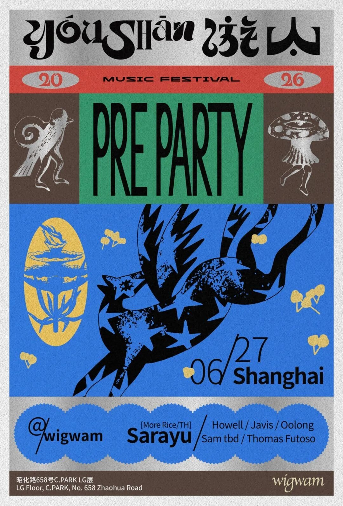

upcoming / High
YOUSHAN Festival Warmup Party (House, Techno, Minimal, Bass)
Warmup party for the second edition of YOUSHAN Festival, an electronic music festival happening July 17-19 in a secret forest in Hebei. Bangkok-based DJ Sarayu headlines, with Javis, Howell, Oolong, Thomas Futoso, and Sam Tbd. House, techno, minimal, bass and breaks.

DateJun 27
Time22:00-04:00
VenueWigwam
DistrictChangning
Soundhouse, downtempo, minimal, ambient, techno, bass, trance
Price¥100
Age / IDAge policy not published
Source layersmartshanghai-detail
Intensityhard
Credibilitystrong
Event Tags
Simple tags for sound, room context, ticket/source status, and details that still need a source check.
How We Recommend This
- RecommendationRecommended because the lineup (Sarayu, Javis, and 2 more listed artists) gives the night a clear bass, breaks, 140, or UKG draw at Wigwam.
- Best forBest for bass, breaks, dubstep, jungle, UKG, and high-energy club-adjacent listeners.
- Verify before goingWait for Wigwam or YOUSHAN to publish the June 27 warmup start time, ticket route, price tier, age policy, and full lineup before recommending it as a firm pick.
- Source confidenceWigwam monthly calendar screenshot confirms the warmup date and ticketed status. SmartShanghai and social-index leads support the route, but current-event practical details remain incomplete.
Lineup and Notes
- SarayuBangkok-based headliner. House, techno, minimal, bass.
- JavisSupport
- HowellSupport
- OolongSupport
- Thomas FutosoSupport
- Sam TbdSupport
Source Trail
- SmartShanghai June 2026 clubbing guide watchlist / checked 2026-06-25 SmartShanghai lists June 27 at Wigwam as a YOUSHAN warmup and says lineup TBA.
- YOUSHAN FESTIVAL 2026 Resident Advisor festival-context / checked 2026-06-14 RA confirms the main festival dates, Secret Forest/Chongli location, techno/house genres, lineup, Showstart ticket link, 199-599 RMB cost, and 18+ age rule; not a Shanghai warmup confirmation.
- Wigwam Instagram June 2026 program search preview social-index-lead / checked 2026-06-14 2026-06-14 Playwright/Chrome public-session route: Instagram home exposed no usable search input; opening the official wigwam.live account timed out on DOMContentLoaded but showed the account title and image placeholders only. No visible June program post, lineup, start time, ticket route, door price, or age policy was confirmed; logged-in Chrome/Instagram, XHS, or WeChat platform search is required.
- jay_sarayu Instagram Youshan pre-party index preview social-index-lead / checked 2026-06-14 Public search-index preview surfaced `27.06: Youshan Festival Pre Party | Wigwam | Shanghai, CN` and appeared to reference Sarayu b2b Elaheh. Treat as an artist-side platform verification lead only: the visible result does not confirm official organizer approval, full lineup, start time, ticket route, door price, or age policy.
- SmartShanghai Wigwam venue context venue-context / checked 2026-06-14 SmartShanghai lists Wigwam at LG-02, B1/F, C PARK, 658 Zhaohua Lu and describes an organic deeper-house, techno, dub, ambient, reggae, and live-electronic lane. Venue context only; not warmup ticket confirmation.
- Wigwam June 2026 monthly calendar screenshot official-wechat-screenshot / checked 2026-06-15 Wigwam June calendar screenshot lists June 27 as YOUSHAN 2026 warmup / Shanghai stop at Wigwam and marks it as Ticket; it does not expose time, price, ticket route, age policy, or full lineup.
- SmartShanghai smartshanghai-detail / checked 2026-06-24
Trust Ledger
- Last checked2026-06-24
- Selection basisIncluded for source visibility, room fit, and these editorial signals: strong techno fit, high intensity, warehouse signal.
- Commercial relationshipNo paid placement recorded.
- Correction routeSend source fixes through RED 980793145 or the corrections policy.
- PolicyHow We Recommend / Corrections